Comandos de GitHub
Comandos de GitHub
Cambiar a versión nocturna
Comandos más usados:
- git init: se usa para iniciar un nuevo repositorio de Git
- git config --global user.name "Nombre": Configura nombre usuario
- git config --global user.email "email": Configura email usuario
- git status: Muestra el estado de actual de los archivos ubicados en el área de staging
- git add nombreArhivo.extension: Agrega al área de staging el o los archivos.
- git commit -m "Descripcion commit": Agrega los cambios a la BD del repositorio de git
- git commit -am "Descripción commit": Nos ahorra el tener que utilizar git commit ., este comando solo es válido para archivos que ya existen en el repositorio, no afectará a archivos nuevos que no hayan sido agregados con add
- git commit: Abrirá el editor Vim para poder agregar un comentario, siempre es obligatorio agregar un comentario para el commit. Para poder editar el comit usar "ESC i". Para guardar cambios ESC + SHIFT + Z Z
- git log: Muestra el historial detallado con commit e id, de todos los commits en dicho repositorio
- Git log repotenciado: Para tener una visualización más gráfica de tu historial en un repositorio, puedes usar el comando git log --all -decorate- oneline con esto, podrás ver el historial de cambios y ramas de forma más gráfica.
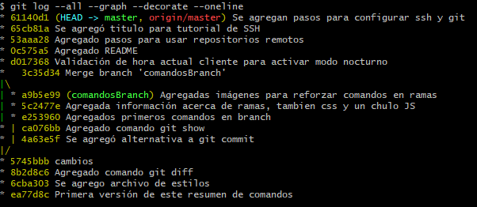
- git log para buscar si deseas buscar palabras que hayas dejado en tus commits, puedes usar git log -S palabra, esto te retornará todos los commits que incluyan la palabra a buscar.
- git diff: Permite ver las diferencias entre el staging y nuestro archivo en local. tiene las variaciones git diff id1 id2 donde se comparan dos versiones según los id del commit seleccionado. y git diff --stat donde ves las diferencias más resumidas.
- git show: Se utiliza para ver el commit y la rama en el que te encuentras actualmente.
- git grep: se usa para buscar texto en nuestros archivos del repositorio, puedes ver la cantidad de veces que se usa una palabra, incluso incluir expresiones regulares. Un ejemplo sería usar git gre -n palabra para ver en que archivos y que líneas esta la palabra "palabra" o git grep -c palabra para ver la cantidad de veces que se repite la palabra "palabra"
Comando de consola útiles
Esta sección es un extra, no tiene que ver directamente con Git, pero puede apoyar de una u otra manera tu repositorios.
- Crear un alias: para resumir comandos que sean muy extensos, se puede utilizar el comando alias nombreNuevoComando="Comando a convertir" de esta manera, podemos usar una palabra más fácil de recordar para nosotros.
Ejemplo: alias arbolito="git log --all --graph --decorate --oneline"
Comandos importantes:
Estos comandos se separan ya que tienen funciones muy importantes.
- git reset idCommit --hard/soft Este comando se encarga de regresar a una versión especificada. Se debe tener cuidado con este comando, ya que borrará absolutamente todos los cambios realizados despues de dicho commit. existen dos variastes para el mismo. --hard hará que regrese por completo todo a la versión elegida, perdiendo incluso, los cambios en staging. --soft cumple el mismo rol, pero mantiene los cambios en staging para su posterior commit.
- git reset HEAD (Me encanta XD): Regresa todos los cambios en staging como unstaged. Es decir, revierte el git add.
- git checkout idCommit archivo.extension: Obtiene la versión especificada de dicho archivo. PERO, no elimina sus versiones posteriores. La versión obtenida se tomará como untracked y podrá ser agregada al staging para realizar commit y crear una nueva versión.
- git rm --cached: Elimina los archivos del área de Staging y del próximo commit pero los mantiene en nuestro disco duro.
- git rm --force: Elimina los archivos del área de Staging y de nuestro disco duro.
Para visualizar todo el historial de git, aunque lo hayamos eliminado, usamos el comando git reflog con este, podemos ver las referencias de los commit e ir y venir entre las distintas versiones con git RESET
Recordatorio: ¡GIT RESET es una mala práctica! Solo usarlo en casos de extrema emergencia y como última opción.
Comandos en ramas
Estos son los comandos aplicados para manejarse entre ramas, crear nuevas ramas, etc.
- git branch nameBranch: Se utiliza para crear una nueva rama.
- git checkout nameBranch Se utiliza para dirigirse hacia la rama elegida.
- git branch -D nombreRama se utiliza para eliminar ramas en git.
- git branch -r: Permite ver las ramas remotas.
- git branch -a: Permite ver todas las ramas incluyendo ramas locales y ramas locales.
- git push origin nombreRama se utiliza para enviar a un repositorio remoto la rama que hemos creado
- git merge nombreRama: Este comando es súper importante, se utiliza cuando quieres unir los cambios entre 2 ramas.
Cuando tienes los cambios de una nueva que creaste y ya les hiciste commit, puedes hacer un merge para fusionarlos con tu rama de master. El proceso puede ser MASTER -> RAMA_NUEVA o RAMA_NUEVA -> MASTER. Cuando quieres dejar todo en master para tener todo en la rama principal, debe usar la segunda opción.
- Conflictos: En GIT, los conflictos aparecen cuando existen diferencias en las mismas líneas de código de los archivos. Ya sea que un compañero modifico la misma línea de un archivo CSS que tú y tienen diferentes cosas.
Los conflictos son fáciles de solucionar y no debe generarte caos ni confusión. La consola de GIT te indicará el estatus del merge que intentaste realizar.
Auto-merging archivo.extension indicará un merge correcto y CONFLICT (Content) archivo.extension indicará un conflicto.
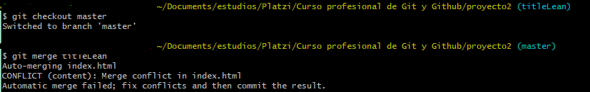
Al revisar nuestro archivo en conflicto, encontraremos algo muy peculiar en el, GIT nos muestra exactamente cual fue la línea en conflictos y cuales son las diferencias entre nuestra rama actual y la que queremos obtener. Así se debe ver al usar el bloc de notas:
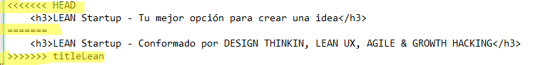
Debemos elegir entre el código que deseamos dejar en el repositorio y para esto, debemos comunicarnos con la persona que escribió el código (si es que estamos trabajando colaborativamente con alguien más) para decidir que código debe irse a la versión del merge. Posterior a este paso, se deben comentar la línea de "<<<<", las de "====" y las de ">>>>" junto con el código que no irá al repositorio.
Se deben guardar los cambios en el archivo y realizar un nuevo git add . además de un git commit -m "Comentario relacionado con la solución del conflicto en el merge"
Adicional: Si usas VSCode, podrás ver que el te da una sugerencia de que hacer con los cambios:
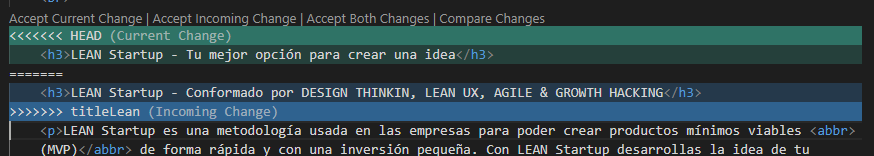
Si eliges Accept Current Change estarás dejando los cambios de la rama actual, en cambio, si elgies Accept Incoming Change estarás obteniendo los cambios de la rama desde la cual estás obteniendo los cambios.
- Publicar ramas en repositorio remotos: Si deseas que tu rama pueda ser usada/visualizada por otros desarrolladores en un repositorio remoto, debes usar el comando git push origin nombreRama
Repositorios remotos - GitHub
Conoceremos como poder conectar nuestro repositorio local con algún repositorio remoto, subir nuestros cambios a dicho repositorio, obtener los cambios desde el repositorio y mucho más.
Para este caso de prueba utilizaremos el repositorio remoto más conocido del mundo, GitHub.
- Primero, debemos crearnos una cuenta en GitHub y crear un nuevo repositorio. Preferiblemente, debemos crear el archivo README ya que a través de el podremos indicarle a otros desarrolladores de que va nuestro código.
- Luego de crear el repositorio, Github nos dará la url del mismo, esta la utilizaremos para agregar este origen remoto desde nuestro repositorio local. Se debe copiar la ruta HTTPS que github nos dió:
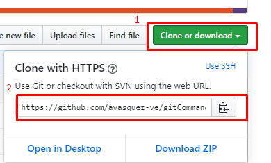
- Usar el comando git remote add origin urlRepositorioRemoto con esto, estaremos agregando la referencia del repositorio remoto a nuestro repositorio en local. Posterior a esto, la consola de git no arrojará ningún mensaje, pero si usamos el comando git remove -v podremos visualizar el repositorio remoto al que hacemos referencia actualmente.
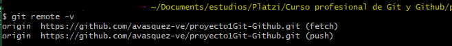
Te dejo la url de este mismo repositorio para que puedas probar: https://github.com/avasquez-ve/gitCommands.git
- Como ya tenemos la referencia del repositorio remoto, ahora debemos obtener la historia que se encuentre en dicho repositorio, esta acción se debe realizar siempre antes de enviar los cambios desde el repositorio local.
Si el repositorio remoto es diferente a nuestro repositorio local, es probable que Git nos de un warning con el mensaje "refusing to merge unrelated histories" esto quiere decir que no puede hacer la fusión debido a que las historias de los dos repositorios son diferentes. Para forzar esta acción y poder obtener la historia del repositorio remoto debemos usar el comando git pull origin master --allow-unrelated-histories para permitir unir ambas historias.
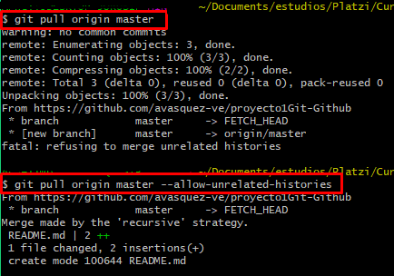
- Con el comando ls -al podremos ver el archivo README creado desde GitHub. Y al ejecutar git log también veremos el commit hecho en GitHub para dicho archivo.
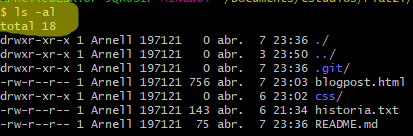
- Ahora, para subir los cambios locales al repositorio, debemos usar el comando git push origin master, con esto, ya nuestros cambios locales estarán dentro del repositorio remoto. Recordar siempre que este comando lo debemos ejecutar desde la rama master para no generar conflictos.
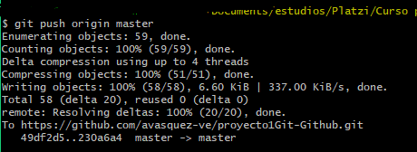
Así quedo nuestro repositorio remoto en GitHub luego de agregar los cambios desde el repositorio local
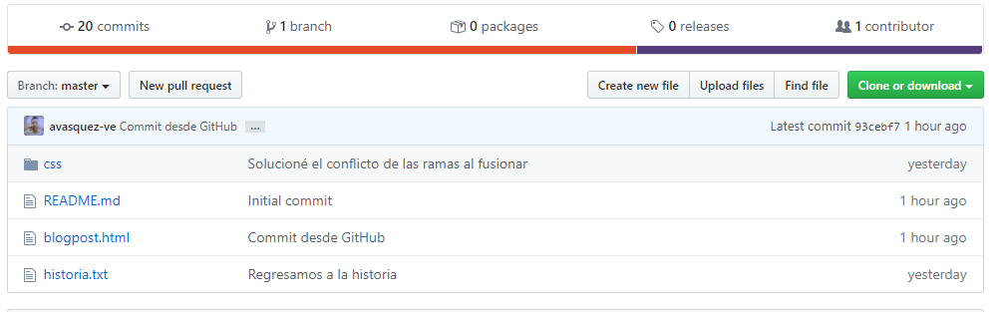
Configurar tus llaves SSH en local
Aprenderemos como usar las llaves SSH para conectarnos a GitHub usando SSH y dejar a un lado HTTPS
Para hacer nuestra conexión aún más segura, podemos usar llaves encriptadas, con las cuales enviamos nuestros datos cifrados. Dichos datos solo podrán ser decifrados con una llave pública que compartiremos con GitHub.
- Primer paso: Generar las llaves SSH con el comando
ssh-keygen -t rsa -b 4096 -C "tu@email.com"
debemos usar el mismo email que usamos para Github. Tomar en cuenta que luego de apretar enter, nos va a sugerir agregarle una contraseña a dicha llave para hacerla aún más segura. Este paso es opcional, si no queremos agregarle una contraseña solo aprietas ENTER.
- Las llaves se guardaran en una carpeta oculta llamada .ssh donde tendremos la llave pública id_rsa.pub y la privada id_rsa NOTA: La llave privada jamás se debe compartir con nadie ni con ningún otro dispositivo.
- Segundo paso: para terminar de configurar las claves, debemos comprobar que el servidor se encuentre activo, para esto usar el comando
eval $(ssh-agent -s)
lo cual nos debería retornar un mensaje Agent pid numeroAleatorio
- Tercer y último paso: ahora, solo debemos agregar al servidor nuestra llave privada, para esto, usar el comando
ssh-add ruta-donde-guardaste-tu-llave-privada
Y listo, ya tendremos configurada nuestra llave privada para poder conectarnos a través de SSH con GitHub
Conectarnos a Github a través de SSH
Luego de haber creado y configurado nuestra llave privada. Debemos configurar nuestra llave pública (la única que podemos compartir) con Github. Es importante tener en cuenta que debemos realizar los pasos anteriores, de lo contrario, no podremos continuar con este paso.
- Como primer paso: debemos agregar nuestra llave pública a nuestra cuenta de Github. Para eso debemos copiar el contenido de nuestra llave publica, ubicada en el archivo id_rsa.pub
- El segundo paso es: Ingresar en nuestra cuenta de Github y dirigirnos a la configuración y posteriormente a la gestion de KEYS SSH
url: https://github.com/settings/keys
Debemos hacer click en New SSH Key
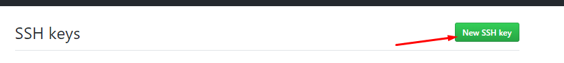
y luego agregar como título, el pc que tendrá asignado dicha key publica, esto es para poder identificarlo, ya que podemos tener varios equipos conectados por SSH a nuestros repositorios. Al finalizar, hacer click en Add SSH KEY
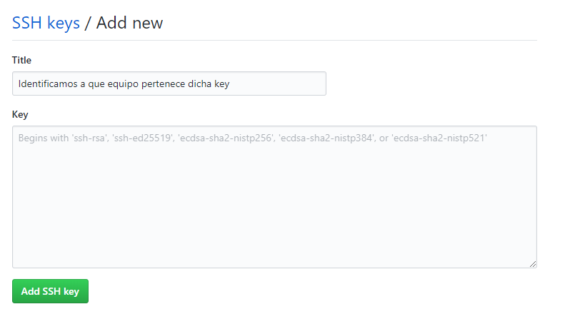
- Ahora podremos ver que nuestra key SSH se agregó correctamente
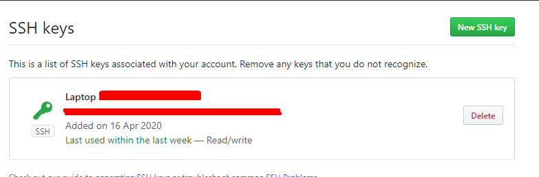
- Como siguiente paso, debemos configurar nuestro repositorio local para dejar de usar HTTPS y empezar a usar SSH con nuestras nuevas keys. Para esto, debemos ir a nuestro repositorio y ejecutar el comando
git remote set-url origin url-ssh-del-repositorio-en-github
Con esto estaremos cambiando la url del repositorio en github. Podemos comprobar la nueva url usando git remove -v
- Ahora puedes hacer un git pull origin master confirmar los mensajes, realizar cambios en tu repositorio local y hacer un git push origin master
Tags y versiones en Git y GitHub
Los tags nos permiten asignar versiones a los commits con cambios más importantes o significativos en nuestro proyecto. A continuación, se presentan los comandos para trabajar con las etiquetas:
- Crear un tag: antes de crear un tag se debe elegir el commit el cual queremos identificar, para esto, podemos hacer un:
git log --all --graph --decorate --oneline o un git log --all --oneline y copiar el id del commit.
Se usan los comandos anteriores para poder obtener el id más corto.
Luego, ejecutamos el comando para crear el tag git tag -a nombreDelTag -m "Comentario asociado al tag" idDelCommit
- Visualizar tags creados: Para visualizar los tags que tenemos creados podemos usar los comandos git tag o git show-ref --tags con el primero, solo veremos el nombre del tag y con el segundo, podremos ver el commit generado al crear el tag y la ubicacion.
- Enviar tags a un repositorio remoto: Para publicar nuestros tags se debe usar el comando git push origin --tags si te das cuenta, se hace diferente a publicar un commit común.
- Eliminar tags: Los tags son publicados en Github como releases, versiones estables de nuestro código que deberían funcionar sin problemas. Si llegas a publicar un tag por equivocación, puedes borrarlo con los siguientes dos comandos:
git tag -d nombreDelTag con esto estaremos borrando el tag en el repositorio local. Para eliminarlo del repositorio remoto se debe usar git push origin :refs/tags/nombreDelTag
Usando Rebase
Rebase se utiliza para unir los cambios que tengamos en una rama con nuestra rama master y no dejar rastros de la existencia de dicha rama creada.
El rebase es útil, por ejemplo, si estamos realizando arreglos de un bug y no se desean mostrar estos cambios como tomados de una rama, si no como parte del flujo normal de la aplicación.
Rebase se encarga de ajustar los cambios al momento en que se realizaron y hacer un merge desde el primer commit, no desde el último (como funciona normalmente un flujo en git)
- Para hacer un rebase, primero debemos crear una nueva rama, posicionarnos en dicha rama con git checkout y realizar los cambios.
- Luego de tener nuestros cambios, debemos ejecutar el comando git rebase master desde nuestra rama de cambios es importante que git rebase se haga desde la rama con los cambios primero
- Con esto, ya tendremos unidas las historias de master con nuestra nueva rama. Posteior a esto se debe realizar checkout a mastery ejecutar el rebase desde master apuntando a nuestra rama de cambios git rebase nombreRamaCambios
- Esto lo que hará es integrar master con nuestra rama de cambios y luego pasarla a master nuevamente con todos los cambios incluidos, como un merge.
- Nota: Usar rebase es una mala práctica, ya que no tenemos historia de lo que sucede, no se sabe quien hizo que cambios y en ocasiones, si master avanzó mucho, se pueden generar muchos conflictos.
Usando Git Stash
Git stash es muy útil cuando tienes cambios que no deseas realizarle commits aún, o para realizar pruebas, experimentos que no requieran o no quieras crear una rama para poder visualizarlos
El stash es una forma de almacenar tus cambios pendientes para luego poder obtenerlos y hacerles commit, incluso puedes crear una rama con esos cambios pendientes, hacerle commit en la nueva rama y luego realizar un merge en master.
Pasos para usar Stash
- Primero, puedes realizar cualquier cambio en un documento y guardar los cambios.
- Luego, usar el comando git stash, esto guardará tus cambios pendientes en un listado de WIP (Work in Process).
- El listado lo puedes consultar usando git stash list
- Para obtener los cambios pendientes, debes usar el comando git stash pop ¡OJO! esto lo debes realizar en la misma rama que estabas creando los cambios, ya que si haces pop en una rama diferente, puedes generar un conflicto.
- Una alternativa para guardar tus cambios pendientes y visualizarlos sin tocar la rama master, es usa el comando git stash branch nombreRama esto creará automáticamente una nueva rama con los cambios que estaban en el stash
- Eliminar un stash si deseas eliminar un stash, puedes usar el comando git stash drop esto eliminará el stash que tengas y dejará la versión original.
Git Clean
Este comando es utilizado para eliminar archivos que no forman parte de nuestro directorio de trabajo, archivos como .logs, resultados de una compilación, etc.
- Para eliminar dichos archivos podemos probar creando copias de archivos existentes en nuestro repositorio
- Luego, ejecutar git clean --dry-run esto se usa para verificar que eliminará git clean
- Al confirmar lo que borrará, ejecutamos git clean -f con esto, ya estaremos borrando dichos archivos
- Nota: Git no eliminará los archivos que se encuentren dentro del .gitignore, tampoco eliminará los archivos que tengan el mismo nombre, asi esten en directorios distintos.
Git cherry pick
Existe un mundo alternativo en el cual vamos avanzando en una rama pero necesitamos en master uno de esos avances de la rama, para eso utilizamos el comando git cherry-pick IDCommit.
cherry-pick es una mala práctica porque significa que estamos reconstruyendo la historia.
- Para usar cherry pick, debes ejecutar el comando git cherry-pick IDCommit desde la rama donde deseas traer los cambios de dicho commit.
- Es posible que genere conflictos este comando, así que debes tenerlo en cuenta para poder hacer el cherry pick.
Git amend
A veces hacemos un commit, pero resulta que no queríamos mandarlo porque faltaba algo más.
Amend remienda nuestro error y los cambios que hicimos nos los permite agregar al commit más reciente.
- Para esto, se debe hacer los cambios necesario, hacer un git add y posterior a esto, ejecutar el comando git commit --amend
Git shortlog
Cuando necesitamos hacer un trabajo donde colaboramos con diferentes programadores es bueno saber los que hace cada uno de ellos para esto usamos git shortlog -n
El cual nos mostrará algo como lo siguiente:
Las contribuciones de cada usuario del proyecto aparecerán en pantalla.
Pero podemos ver variantes del mismo comando:
- git shortlog -sn: El cual nos muestra el numero de aportes de cada usuario.
- git shortlog -sn --all: El cual nos muestra todas las contribuciones de cada usuario además incluyendo los commits borrados
- git shortlog -sn --all --no-merges: El cual nos muestra todas las contribuciones de cada usuario pero no los merges
Alias de git
Así como podemos añadir alias en nuestra computadora también puedes hacer alias en la configuración de git con el siguiente comando :
git config --global alias.nombre_del_alias "comando a ejecutar"
Se ejecuta el alias con el siguiente comando: git nombre_del_alias
Git blame
Permite ver línea por línea quien ha sido el creador de las mismas, para eso tenemos que escribir el siguiente comando : git blame archivo.extension
Este comando también permite variaciones:
- git blame archivo.extension -L35,53: Permite ver las el contenido entre las líneas 35 y 53 del archivo.
- git blame archivo.extension -L35,53 -c: Permite ver lo mismo que el anterior comando pero con un poco más de formato.
Magia para desarolladores
Si has llegado hasta aquí y ya manejas de memoria los principales comandos de git, los comandos para las ramas,sabes hacer un merge sin caer en la locura y trabajar con repositorios remotos.
Te dejo un buen comando de git que te ayudará a ver fácilmente tu historial de commits.
¡OJO! has click en el siguiente enlace solo si REALMENTE manejas y comprendes los comandos anteriores y el flujo de Git, de lo contrario, REGRESA OTRO DíA 👺
Visualizar el comando